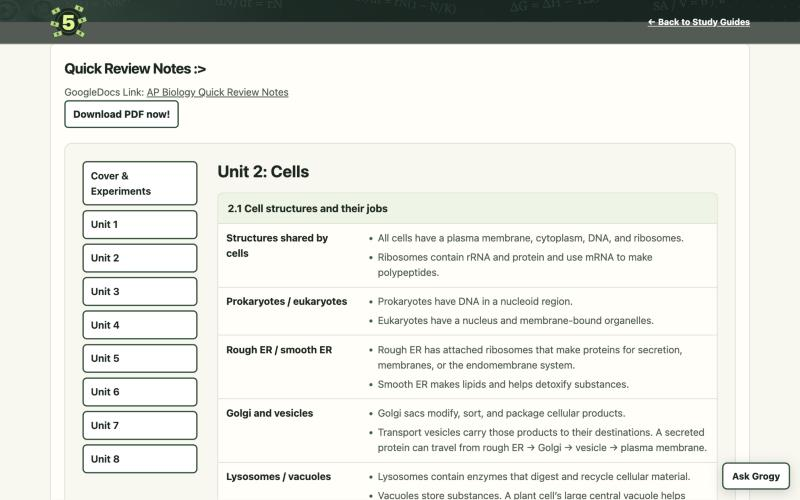
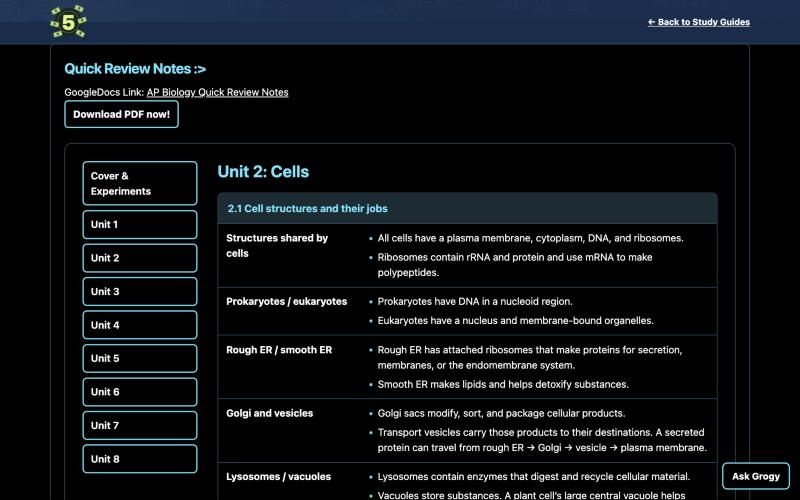

Original study guides from the developer
Every study guide on Fivey was written by the developer while preparing for his own AP exams, with no AI-generated content. Detailed Study Guides and Quick Review Notes break each course down unit by unit, with tables and diagrams that make the key ideas easy to review.